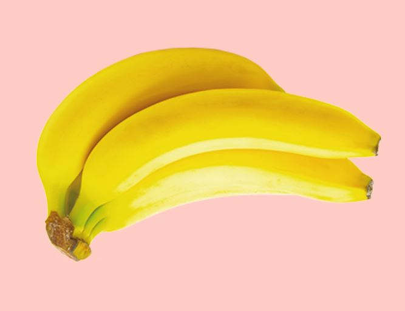
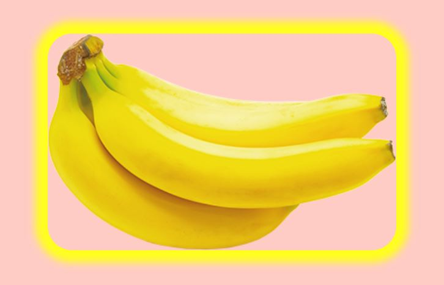

This was one of my favourite projects, even though we had to code using Javascript, I think I did it very well.
I made the website in pastel colors, so the overlook is soothing and appealing to people. It is in baby pink and the fonts are easy to read.
In the pictures you can see some of the functions that banana can do.

